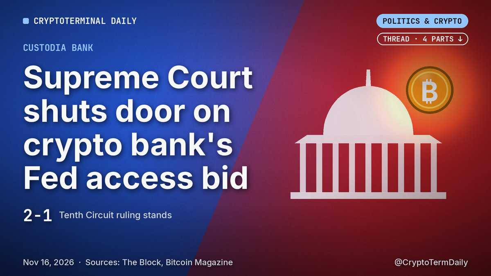

Supreme Court closes the door on Custodia Bank's Fed access fight

A long legal road ends
The US Supreme Court has declined to hear Custodia Bank's appeal, according to The Block and Bitcoin Magazine. The court listed the petition as denied on its Monday order list. That ends the Wyoming crypto bank's attempt to force the Federal Reserve to give it a master account, and it removes the last judicial route the company had left.
What a master account actually is
A master account is a bank's own account at a Federal Reserve Bank. It is the entry point to Fedwire and other payment services of the central bank. A bank without one cannot move dollars on its own. It has to route payments through a correspondent institution, which adds a middleman that can raise prices, slow transfers or simply refuse the business.
Custodia is a Wyoming special purpose depository institution. That charter forbids lending and requires deposits to be fully backed by liquid assets. In other words, it was designed to look more like a vault for dollars than a conventional bank, and its pitch was to serve crypto firms safely.
A timeline that began with encouragement
Custodia applied to the Federal Reserve Bank of Kansas City in October 2020. By January 2021 the Kansas City Fed told the company it was legally eligible and that it saw no showstoppers. Months later Custodia also sought Fed membership.
Then the process stalled. In 2022 the Fed's Board of Governors published guidelines for judging master account applications. Applicants lacking both federal deposit insurance and a federal banking supervisor land in the third tier, which gets the harshest scrutiny. Custodia fell into that group.
In January 2023 the Kansas City Fed rejected the application, describing the business model as unprecedented and focused on crypto-asset activities, and saying the risks were highly likely to clash with safe and sound banking. The Board turned down the membership request the same day. Custodia had already sued over the delay in 2022.
What the courts decided
A federal district judge in Wyoming sided with the Fed in March 2024. He read the Federal Reserve Act as giving Reserve Banks discretion over whether to grant accounts. The Tenth Circuit upheld that outcome in a 2-1 decision in October 2025, and the full appeals court declined to rehear the case in March 2026.
The majority's reasoning turned on wording. One provision says a Reserve Bank may receive deposits, which the judges treated as permission rather than obligation. A 1980 law says Fed services shall be available to nonmember banks, and the majority read that as a pricing rule, not a guarantee of an account.
Judge Tymkovich disagreed. In his view the ordinary language of the statute settles it, and shall means shall. In a later dissent he warned that losing a master account is akin to a death sentence for a bank. The Supreme Court's refusal to take the case leaves the majority's reading in place, at least within the Tenth Circuit.
Why it matters beyond one company
The practical result is simple. Holding a state charter, even one that leaves a bank legally eligible, no longer secures a place in the Fed's payment system. Banks built around crypto, and other novel charters, now have very little legal recourse if a Reserve Bank says no.
Industry supporters have long used the label Operation Choke Point 2.0 for banks cutting off crypto clients. This ruling does not prove that claim, and the court gave no reasoning of its own when it turned the petition away. But it does show where the leverage sits. The decision about who gets into the payment rails rests with the Fed, and judges have said they will not second-guess it.
What to watch
First, whether Congress or federal regulators offer a clearer, rules-based path for novel banks, since the courts will not. Second, whether crypto firms keep leaning on correspondent banks, and how those banks treat them. Third, whether Custodia or its chief executive Caitlin Long respond. As of Monday morning Eastern time, neither had commented on the denial.
For the industry, the lesson is that regulatory clarity is a political question now, not a judicial one. A case that started with a friendly signal from a regional Fed in 2021 has ended with the central bank holding full discretion.